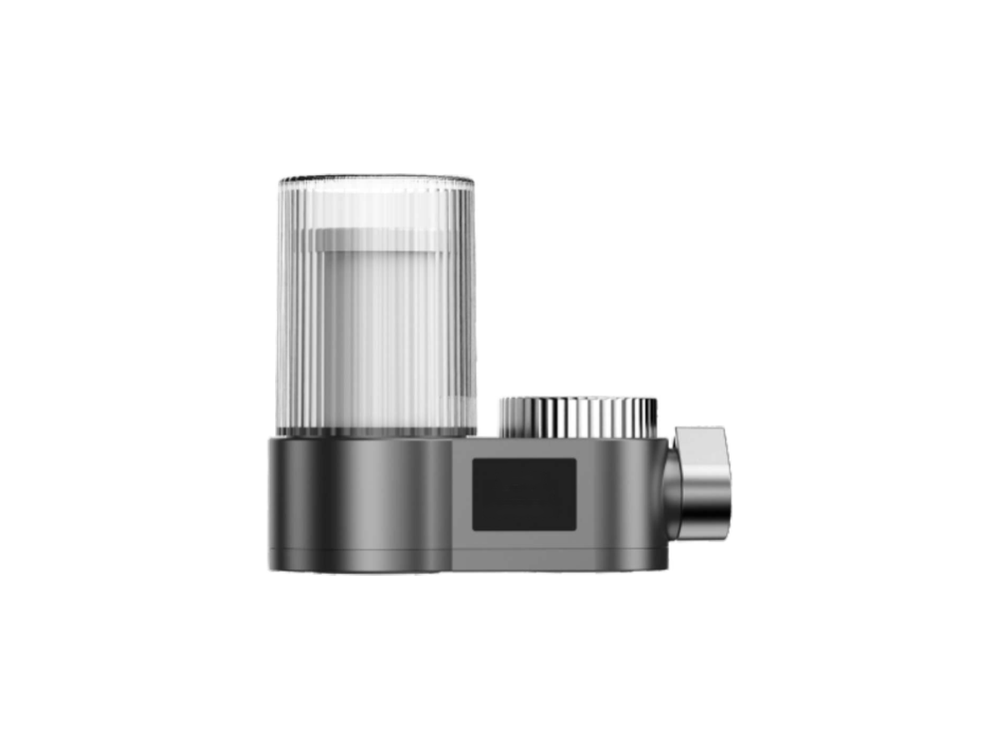

Grifo
GrifoRP-F01
Filtro de grifo clásico
SKU: RP-F01
MOQ: confirmar al consultar
Inicio/Productos/Filtros de grifo/ RP-F08

Filtros de grifo
Filtros de grifo (JK-D1) — tres opciones. RP-F08 lidera la familia.
RP-F08 es una familia de filtros de grifo: tres opciones sobre la misma plataforma cerámica de 1,5–2 L/min y 2–5 µm — el modelo con pantalla de vida útil del filtro (pantalla 100% digital, luz azul accionada por agua); el modelo de microburbujas (salidas dobles, microburbujas de 1–100 µm para el cuidado de la piel y la limpieza); y el modelo de limpieza con espuma (cuatro modos, pulverizador de espuma manual). Las especificaciones se confirman por modelo y pedido.
Las opciones de pantalla y acabado se confirman por pedido.
Solicitar presupuesto para RP-F08
El voltaje / la frecuencia se configuran según el país de destino. Otras configuraciones se confirman por pedido.
RP-F08 es una familia de filtros de grifo (JK-D1) con tres opciones sobre la misma plataforma cerámica de 1,5–2 L/min y 2–5 µm: el modelo con pantalla de vida útil del filtro (pantalla 100% digital, luz azul accionada por agua), el modelo de microburbujas (salidas dobles, microburbujas de 1–100 µm para el cuidado de la piel y la limpieza) y el modelo de limpieza con espuma (cuatro modos, pulverizador de espuma manual). Las tres comparten una vida útil del cartucho de 3–6 meses, una temperatura del agua de 5–38°C, una presión de trabajo de 0,1–0,4 MPa y agua corriente municipal como fuente de agua. Las dimensiones se confirman por pedido.
¿Cuál es la cantidad mínima de pedido?
El primer pedido es de 200 unidades por modelo, y los pedidos repetidos son de 500 unidades.
¿Puedo pedir una muestra antes de un pedido en volumen?
Sí. Las muestras están listas en 15 días y la tarifa de la muestra se reembolsa en su primer pedido en volumen. Los pedidos en volumen tardan 40 días tras la aprobación de la muestra y se envían FOB Shenzhen.
¿Cuánto dura el cartucho?
La vida útil del cartucho es de 3–6 meses para los tres modelos.
Tres opciones de filtro de grifo — cotizar como RP-F08 e indicar la opción (pantalla de vida útil del filtro, microburbujas o limpieza con espuma). El modelo con pantalla de vida útil del filtro viene con tapa oscura o transparente.
Pase el cursor sobre la imagen de una variante para ver sus especificaciones. En pantallas táctiles, toque una imagen.



Especificaciones completas de cada modelo, lado a lado. La tabla de especificaciones más abajo muestra los valores de RP-F08.
| Especificación | RP-F08-1 — pantalla de vida útil del filtro (JK-D1) | RP-F08-2 — microburbujas (JK-H1) | RP-F08-3 — limpieza con espuma (JK-E2) |
|---|---|---|---|
| Tipo | Purificador de grifo inteligente | Purificador de grifo con microburbujas para el cuidado de la piel | Filtro de grifo 2 en 1 para limpieza con espuma |
| Forma | Cartucho vertical sobre base horizontal | Cuerpo horizontal en bala | Base ancha, dos cartuchos + manguera enrollada + pulverizador manual |
| Pantalla | Pantalla 100% digital de vida útil del filtro | Ninguno | Pantalla 100% en algunas variantes |
| Salidas | Salida única filtrada | Doble: agua purificada + agua con microburbujas | Cuatro modos: agua bruta / agua pura / espuma / ducha |
| Función especial | Luz azul accionada por agua; tapa de encaje; palanca | Microburbujas 1–100 µm; limpia y elimina residuos de pesticidas | Limpieza con espuma con un toque; pulverizador de espuma manual |
| Colors | Azul oscuro, gris, amarillo, plata | Dorado champán, azul plateado, morado | Oscuro, beige, blanco, plata |
| Caudal nominal | 1.5-2 L/min | 1.5-2 L/min | 1.5-2 L/min |
| Precisión de filtración | 2-5 µm (cerámica) | 2-5 µm (cerámica) | 2-5 µm (cerámica) |
| Temperatura del agua | 5-38°C | 5-38°C | 5-38°C |
| Presión de trabajo | 0.1-0.4 MPa | 0.1-0.4 MPa | 0.1-0.4 MPa |
| Fuente de agua | Agua corriente municipal | Agua corriente municipal | Agua corriente municipal |
| Vida útil del cartucho | 3-6 meses | 3-6 meses | 3-6 meses |
| Dimensiones | A confirmar por pedido | A confirmar por pedido | A confirmar por pedido |
El caudal nominal, la precisión de filtración, la temperatura del agua, la presión de trabajo, la fuente de agua y la vida útil del cartucho son iguales en los tres modelos (valores de catálogo). Los modelos difieren en forma, pantalla, salidas y función especial. El modelo con pantalla de vida útil del filtro viene con tapa oscura o transparente.
7 filas de especificaciones del catálogo de ROPureOEM.
| Caudal nominal | 1.5-2 L/min |
|---|---|
| Precisión de filtración | 2-5 µm (cerámica) |
| Temperatura del agua | 5-38°C |
| Presión de trabajo | 0.1-0.4 MPa |
| Fuente de agua | Agua corriente municipal |
| Vida útil del cartucho | 3-6 meses |
| Dimensiones | A confirmar por pedido |
Las especificaciones proceden del catálogo de ROPureOEM. Cuando un valor aún no está confirmado, se indica como «Confirmado por pedido» — no publicamos cifras sin confirmar.
GrifoFiltro de grifo clásico
SKU: RP-F01
MOQ: confirmar al consultar
 Grifo
GrifoFiltro de grifo giratorio 360°
SKU: RP-F02
MOQ: confirmar al consultar
 Grifo
GrifoFiltro de grifo de fibra de carbono
SKU: RP-F06
MOQ: confirmar al consultar
 Grifo
GrifoFiltro de agua para grifo, integrado
SKU: RP-F10
MOQ: confirmar al consultar